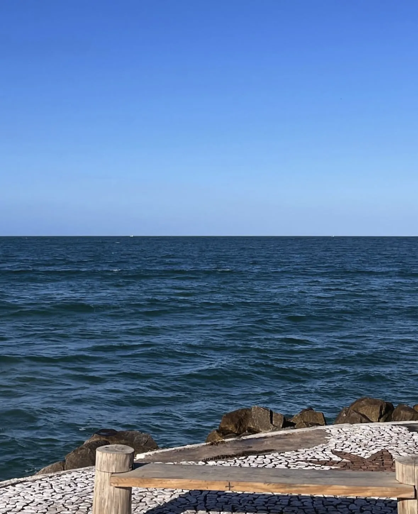
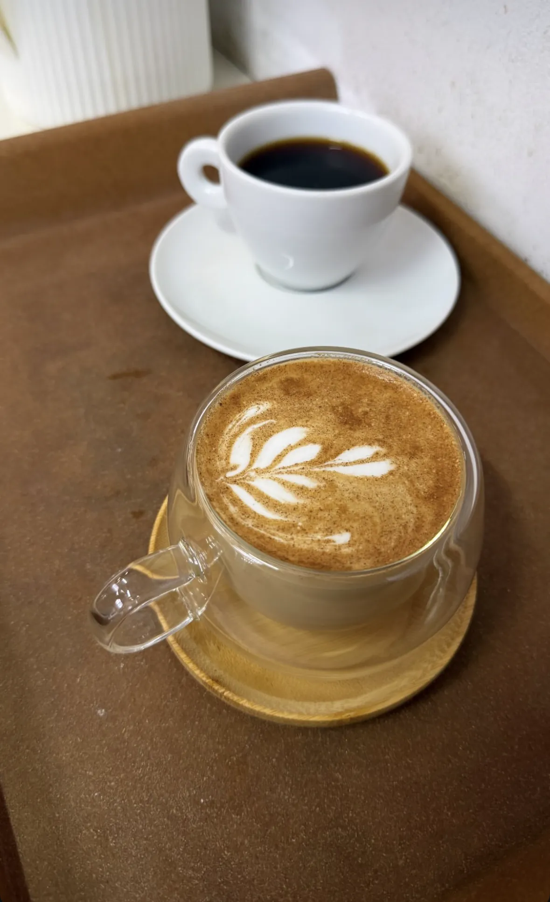
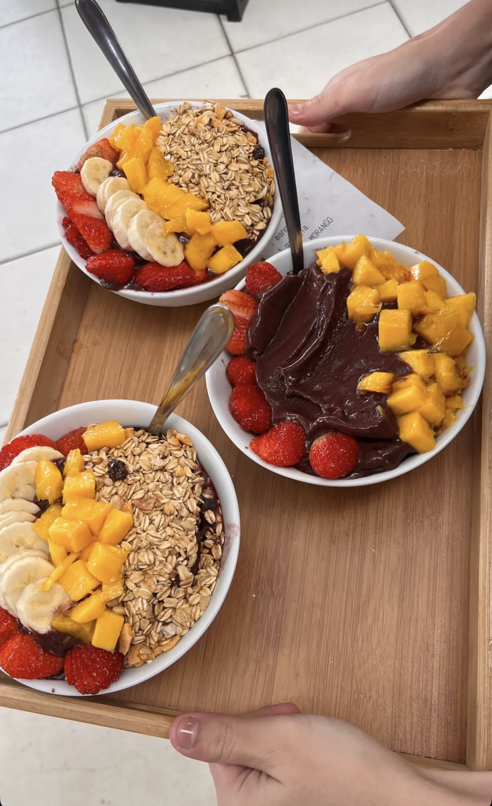
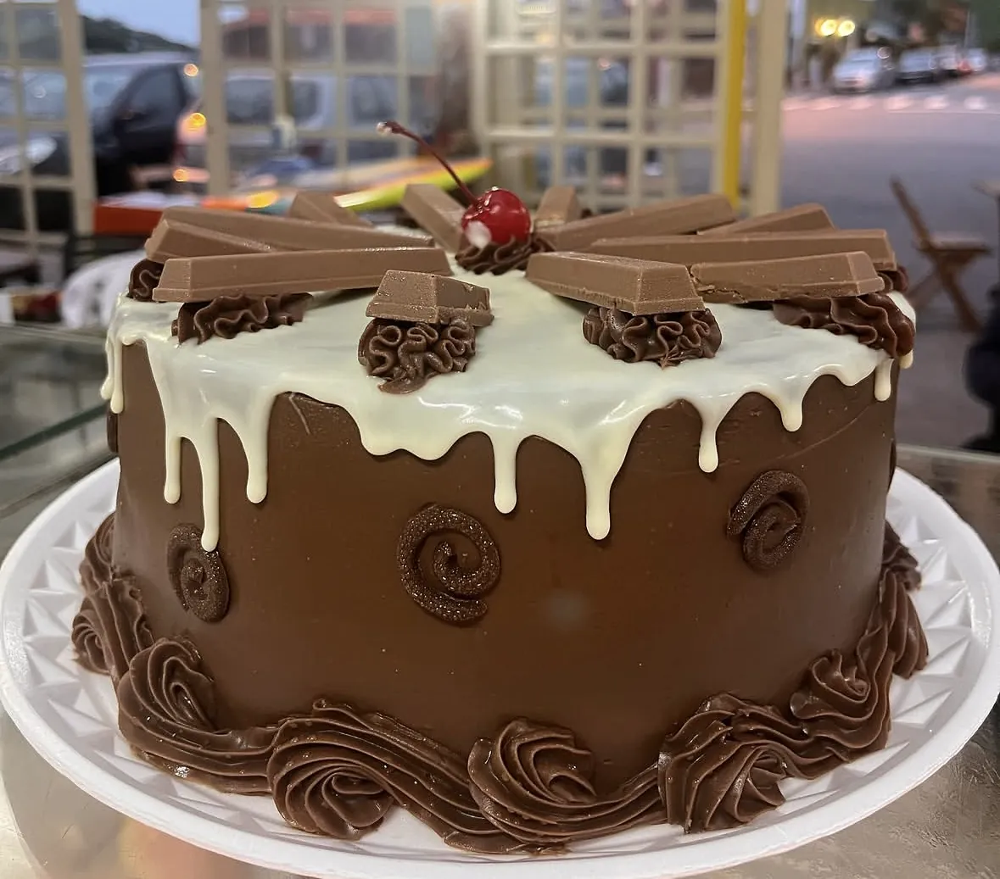
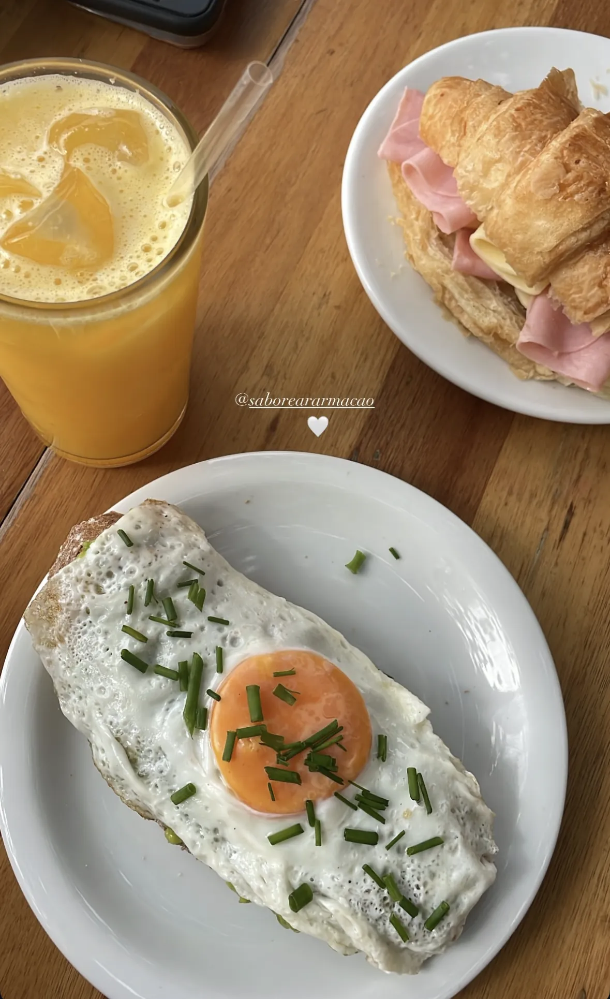
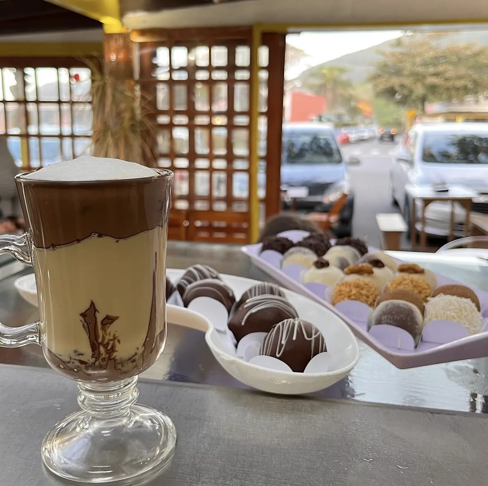
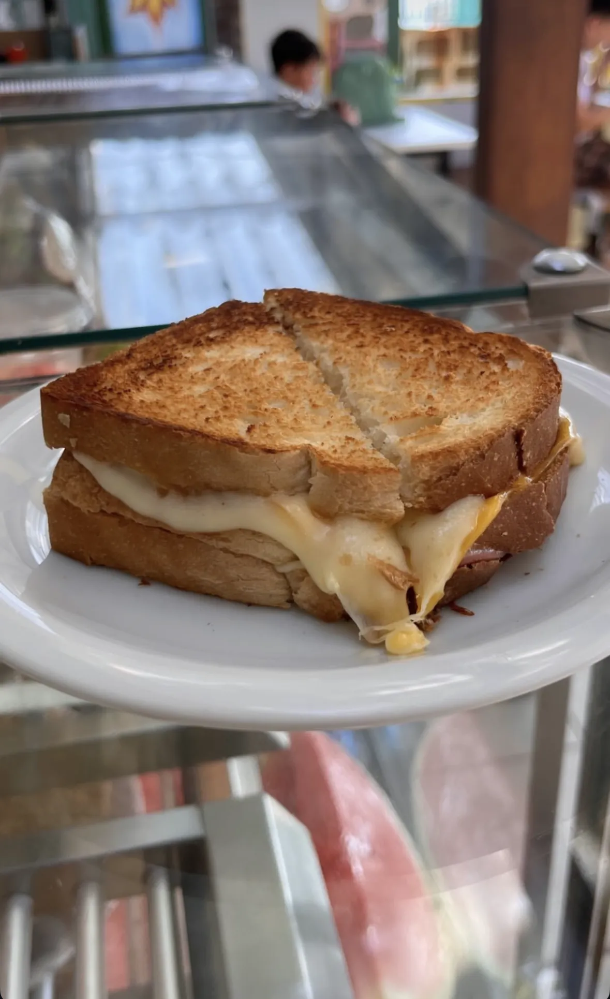
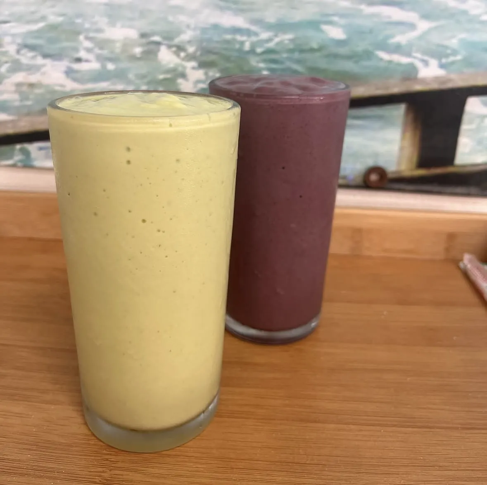
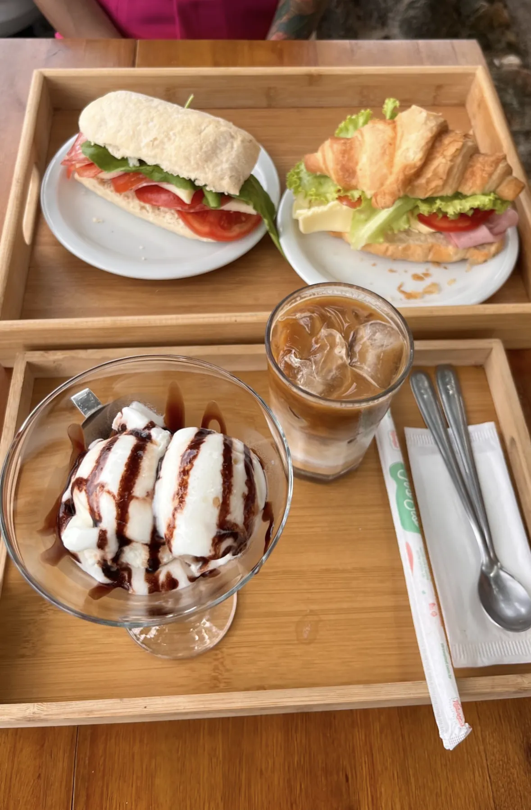
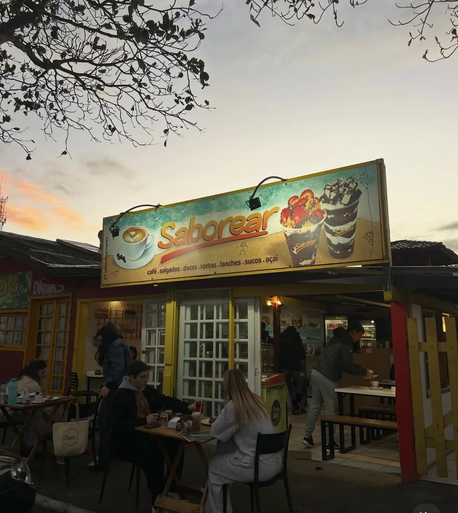

Saborear
Praia da Armação · Florianópolis · desde 1999
O nosso quintal
“Hoje o nosso quintal estava assim.”
Legenda de um post do @saboreararmacao, outubro de 2025.

Da vitrine e do balcão
Fotos do Instagram do Saborear e de clientes que marcaram a casa.

foto: @saboreararmacao
foto: @saboreararmacao
foto: @saboreararmacao
foto: @anaosoriobb via @saboreararmacao
foto: @saboreararmacao
foto: @saboreararmacao
foto: @saboreararmacao
foto: @saboreararmacaoCardápio
O que tem no balcão
Itens vistos no Instagram · lista completa e preços a confirmar
Horário
Passe para um café.
Onde fica
Na Praia da Armação.
Armação do Pântano do Sul, Florianópolis · endereço exato a confirmar
